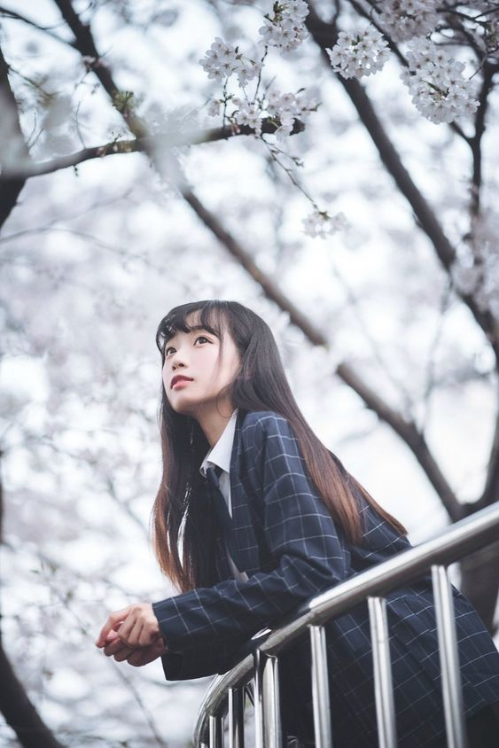

☰
girl
hyoon

- 写真 (しゃしん, shashin) – Photograph, picture - 桜 (さくら, sakura) – Cherry blossoms - 木 (き, ki) – Tree - 下 (した, shita) – Under, beneath - 若い (わかい, wakai) – Young - 女性 (じょせい, josei) – Woman, female - 写る (うつる, utsuru) – To be photographed, to appear in a photo - 着る (きる, kiru) – To wear (clothes) - ダークブルー (dāku burū) – Dark blue - チェック柄 (チェックがら, chekku gara) – Checkered pattern - ブレザー (burezā) – Blazer - 長い (ながい, nagai) – Long - 黒髪 (くろかみ, kurokami) – Black hair - なびかせる (nabikaseru) – To let (hair, fabric) flutter/sway - 表情 (ひょうじょう, hyōjō) – Facial expression - 穏やか (おだやか, odayaka) – Calm, gentle - 遠く (とおく, tōku) – Far away, distance - 見つめる (みつめる, mitsumeru) – To gaze at, to stare - 物思い (ものおもい, mono omoi) – Thoughtfulness, contemplation - ふける (fukeru) – To be absorbed in (thought) - 手すり (てすり, tesuri) – Handrail - 寄りかかる (よりかかる, yorikakaru) – To lean on - 楽しむ (たのしむ, tanoshimu) – To enjoy - 風景 (ふうけい, fūkei) – Scenery, landscape - 満開 (まんかい, mankai) – Full bloom - 広がる (ひろがる, hirogaru) – To spread, to extend - 柔らかい (やわらかい, yawarakai) – Soft, gentle - 光 (ひかり, hikari) – Light - 包み込む (つつみこむ, tsutsumikomu) – To envelop, to wrap around - 幻想的 (げんそうてき, gensōteki) – Fantastical, dreamy - 春 (はる, haru) – Spring (season) - 優雅 (ゆうが, yūga) – Elegant, graceful - 雰囲気 (ふんいき, fun'iki) – Atmosphere, ambiance
- 画像 (がぞう, gazou) – Image, picture - 女性 (じょせい, josei) – Woman, female - 室内 (しつない, shitsunai) – Indoors, inside a room - 自撮り (じどり, jidori) – Selfie - 長い (ながい, nagai) – Long - 黒髪 (くろかみ, kurokami) – Black hair - 結ぶ (むすぶ, musubu) – To tie, to bind - 耳 (みみ, mimi) – Ear - 複数 (ふくすう, fukusuu) – Multiple, several - ピアス (ぴあす, piasu) – Piercing, earrings - 目立つ (めだつ, medatsu) – To stand out, to be noticeable - ハート型 (はーとがた, haatogata) – Heart-shaped - イヤリング (いやりんぐ, iyaringu) – Earrings - グレー (ぐれー, guree) – Gray - タンクトップ (たんくとっぷ, tankutoppu) – Tank top - リラックス (りらっくす, rirakkusu) – Relaxation, relaxed - 雰囲気 (ふんいき, fun'iki) – Atmosphere, mood - 背景 (はいけい, haikei) – Background - 小さい (ちいさい, chiisai) – Small - クリスマスツリー (くりすますつりー, kurisumasutsurii) – Christmas tree - 飾り (かざり, kazari) – Decoration, ornament - ライト (らいと, raito) – Light - オーナメント (おーなめんと, oonamento) – Ornament - 部屋 (へや, heya) – Room - インテリア (いんてりあ, interia) – Interior - シンプル (しんぷる, shinpuru) – Simple - 白い (しろい, shiroi) – White - 壁 (かべ, kabe) – Wall - 通気口 (つうきこう, tsuukikou) – Ventilation opening, air vent